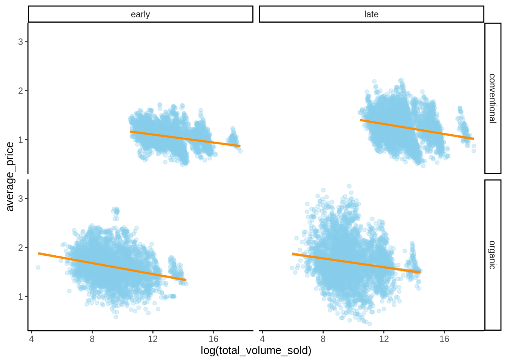
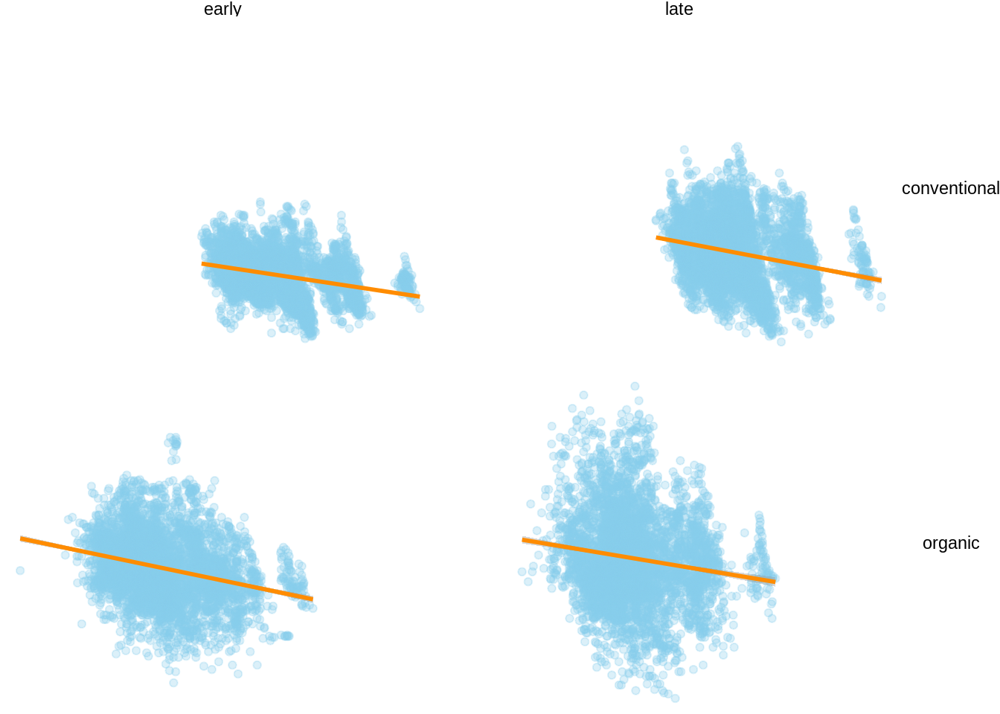
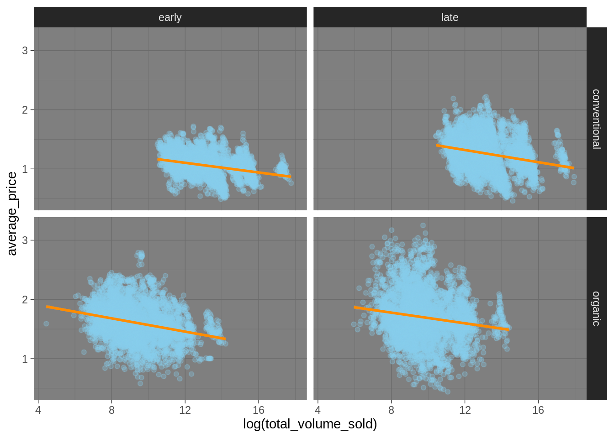
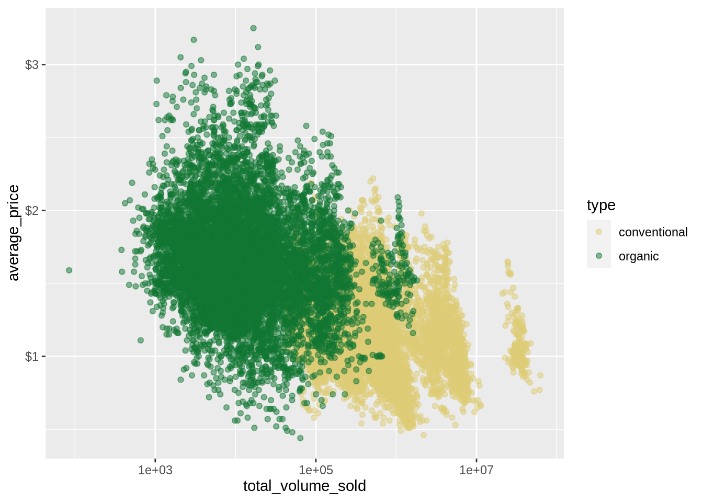

6.6 Customization etc.
There are many ways in which graphs can (and often: ought to) be tweaked further. The following can only cover a small, but hopefully useful selection.
6.6.1 Themes
The general appearance of a plot is governed by its theme. There are many ready-made themes already in the ggplot package, as listed here, and there are more in several other packages. If we store a plot in a variable we can look at how different themes affect it.
avocado_grid_plot <- avocado_data_early_late %>%
ggplot(aes(x = log(total_volume_sold), y = average_price)) +
geom_point(alpha = 0.3, color = "skyblue") +
geom_smooth(method = "lm", color = "darkorange") +
facet_grid(type ~ early)


The plots in this book use the theme hrbrthemes::theme_ipsum from the hrbrthemes package as a default. You can set the default theme for all subsequent plots using a command like this:
More elaborate tweaking of a plot’s layout can be achieved by the theme function. There are many options. Some let you do crazy things:
6.6.2 Guides
When using grouped variables (by color, shape, linetype, group, …) ggplot creates a legend automatically.
avocado_data %>%
ggplot(
mapping = aes(
x = log(total_volume_sold),
y = average_price,
color = type
)
) +
geom_point(alpha = 0.5)The legend can be suppressed with the guides command. It takes as arguments the different types of grouping variables (like color, group, etc.).
6.6.3 Axes, ticks and tick labels
If you need to use a non-standard (Cartesian) axis, you can do so, e.g., by changing the \(x\)-axis to a log scale (with base 10):
avocado_data %>%
ggplot(
mapping = aes(
x = total_volume_sold,
y = average_price,
color = type
)
) +
geom_point(alpha = 0.5) +
scale_x_log10()The scales package has a number of nice convenience functions for tweaking axis ticks (the places where axes are marked and possibly labeled) and tick labels (the labels applied to the tick marks). For example, we can add dollar signs to the price information, like so:
avocado_data %>%
ggplot(
mapping = aes(
x = total_volume_sold,
y = average_price,
color = type
)
) +
geom_point(alpha = 0.5) +
scale_x_log10() +
scale_y_continuous(labels = scales::dollar)
6.6.4 Labels
To change any other kind of labeling information (aside from tick mark labels on axes), the labs function can be used. It is rather self-explanatory:
avocado_data %>%
ggplot(
mapping = aes(
x = total_volume_sold,
y = average_price,
color = type
)
) +
geom_point(alpha = 0.5) +
scale_x_log10() +
scale_y_continuous(labels = scales::dollar) +
# change axis labels and plot title & subtitle
labs(
x = 'Total volume sold (on a log scale)',
y = 'Average price',
title = "Avocado prices plotted against the amount sold per type",
subtitle = "With linear regression lines",
caption = "This plot shows the total volume of avocados sold against the average price for many different points in time."
)6.6.5 Combining & arranging plots
Presenting visual information in a tightly packed spatial arrangement can be helpful for the spectator. Everything is within a single easy saccade, so to speak. Therefore it can be useful to combine different plots into a single combined plot. The cowplot package helps with this, in particular the function cowplot::plot_grid as shown here:
# create an avocado plot
avocado_plot <- avocado_data %>%
ggplot(aes(x = total_volume_sold, y = average_price)) +
geom_point(alpha = 0.5)
# create a BLJM bar plot
BLJM_plot <- data_BLJM_processed %>%
ggplot(aes(x = response)) +
geom_bar()
# combine both into one
cowplot::plot_grid(
# plots to combine
avocado_plot,
BLJM_plot,
# number columns
ncol = 1
)6.6.6 LaTeX expressions in plot labels
If you are enthusiastic about LaTeX, you can also use it inside of plot labels. The latex2exp package is useful here, which provides the function latex2exp::TeX to allow you to include LaTeX formulas. Just make sure that you double all backslashes, as in the following example:
avocado_data %>%
ggplot(aes(x = total_volume_sold, y = average_price)) +
geom_point(alpha = 0.5) +
labs(title = latex2exp::TeX("We can use $\\LaTeX$ here: $\\sum_{i = 0}^n \\alpha^i$"))Exercise 6.4: Customization
Feel free to play around with customizing your previously created plots or plots that you find in this book. Try to make annotations or try out different themes and colors. It will help you understand these kinds of plots a little better.
## R version 4.1.1 (2021-08-10)
## Platform: x86_64-pc-linux-gnu (64-bit)
## Running under: Ubuntu 20.04.3 LTS
##
## Matrix products: default
## BLAS: /usr/lib/x86_64-linux-gnu/blas/libblas.so.3.9.0
## LAPACK: /usr/lib/x86_64-linux-gnu/lapack/liblapack.so.3.9.0
##
## locale:
## [1] LC_CTYPE=C.UTF-8 LC_NUMERIC=C LC_TIME=C.UTF-8
## [4] LC_COLLATE=C.UTF-8 LC_MONETARY=C.UTF-8 LC_MESSAGES=C.UTF-8
## [7] LC_PAPER=C.UTF-8 LC_NAME=C LC_ADDRESS=C
## [10] LC_TELEPHONE=C LC_MEASUREMENT=C.UTF-8 LC_IDENTIFICATION=C
##
## attached base packages:
## [1] stats graphics grDevices utils datasets methods base
##
## other attached packages:
## [1] zeallot_0.1.0 magrittr_2.0.1 scales_1.1.1 cowplot_1.1.1
## [5] latex2exp_0.5.0 naniar_0.6.1 boot_1.3-28 extraDistr_1.9.1
## [9] rcartocolor_2.0.0 gridExtra_2.3 ggsignif_0.6.3 brms_2.16.1
## [13] Rcpp_1.0.7 forcats_0.5.1 stringr_1.4.0 dplyr_1.0.7
## [17] purrr_0.3.4 readr_2.0.2 tidyr_1.1.4 tibble_3.1.5
## [21] ggplot2_3.3.5 tidyverse_1.3.1
##
## loaded via a namespace (and not attached):
## [1] readxl_1.3.1 backports_1.2.1 plyr_1.8.6
## [4] igraph_1.2.6 splines_4.1.1 crosstalk_1.1.1
## [7] rstantools_2.1.1 inline_0.3.19 digest_0.6.28
## [10] htmltools_0.5.2 rsconnect_0.8.24 fansi_0.5.0
## [13] checkmate_2.0.0 tzdb_0.1.2 modelr_0.1.8
## [16] RcppParallel_5.1.4 matrixStats_0.61.0 vroom_1.5.5
## [19] xts_0.12.1 prettyunits_1.1.1 colorspace_2.0-2
## [22] rvest_1.0.1 haven_2.4.3 xfun_0.26
## [25] callr_3.7.0 crayon_1.4.1 jsonlite_1.7.2
## [28] lme4_1.1-27.1 zoo_1.8-9 glue_1.4.2
## [31] gtable_0.3.0 V8_3.4.2 distributional_0.2.2
## [34] pkgbuild_1.2.0 rstan_2.21.2 abind_1.4-5
## [37] mvtnorm_1.1-2 DBI_1.1.1 miniUI_0.1.1.1
## [40] xtable_1.8-4 bit_4.0.4 stats4_4.1.1
## [43] StanHeaders_2.21.0-7 DT_0.19 htmlwidgets_1.5.4
## [46] httr_1.4.2 threejs_0.3.3 posterior_1.1.0
## [49] ellipsis_0.3.2 pkgconfig_2.0.3 loo_2.4.1
## [52] farver_2.1.0 sass_0.4.0 dbplyr_2.1.1
## [55] utf8_1.2.2 labeling_0.4.2 tidyselect_1.1.1
## [58] rlang_0.4.11 reshape2_1.4.4 later_1.3.0
## [61] munsell_0.5.0 cellranger_1.1.0 tools_4.1.1
## [64] cli_3.0.1 generics_0.1.0 broom_0.7.9
## [67] ggridges_0.5.3 evaluate_0.14 fastmap_1.1.0
## [70] yaml_2.2.1 bit64_4.0.5 processx_3.5.2
## [73] knitr_1.36 fs_1.5.0 visdat_0.5.3
## [76] nlme_3.1-152 mime_0.12 projpred_2.0.2
## [79] xml2_1.3.2 compiler_4.1.1 bayesplot_1.8.1
## [82] shinythemes_1.2.0 rstudioapi_0.13 gamm4_0.2-6
## [85] curl_4.3.2 reprex_2.0.1 bslib_0.3.0
## [88] stringi_1.7.5 highr_0.9 ps_1.6.0
## [91] Brobdingnag_1.2-6 lattice_0.20-45 Matrix_1.3-4
## [94] nloptr_1.2.2.2 markdown_1.1 shinyjs_2.0.0
## [97] tensorA_0.36.2 vctrs_0.3.8 pillar_1.6.3
## [100] lifecycle_1.0.1 jquerylib_0.1.4 bridgesampling_1.1-2
## [103] httpuv_1.6.3 R6_2.5.1 bookdown_0.24.1
## [106] promises_1.2.0.1 codetools_0.2-18 colourpicker_1.1.1
## [109] MASS_7.3-54 gtools_3.9.2 assertthat_0.2.1
## [112] withr_2.4.2 shinystan_2.5.0 mgcv_1.8-37
## [115] parallel_4.1.1 hms_1.1.1 grid_4.1.1
## [118] coda_0.19-4 minqa_1.2.4 rmarkdown_2.11
## [121] shiny_1.7.1 lubridate_1.7.10 base64enc_0.1-3
## [124] dygraphs_1.1.1.6